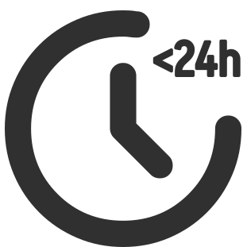
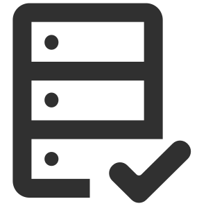
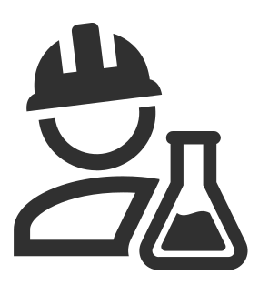
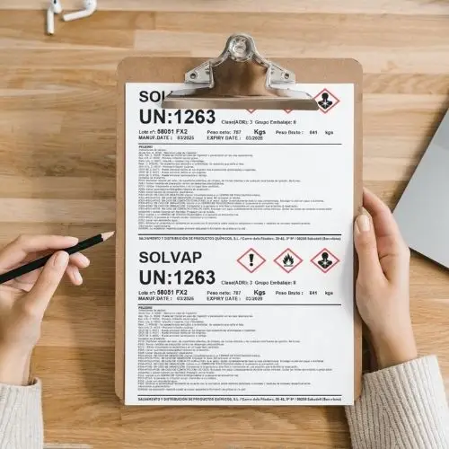

Ventajas de trabajar con Salvadis

Transparencia en cada paso
Control y trazabilidad

En Salvadis trabajamos con un proceso estructurado, seguro y trazable para gestionar productos químicos y mercancías industriales de forma eficiente.
Nuestra metodología abarca desde la evaluación inicial de la mercancía hasta su
recuperación, almacenamiento, distribución o salida, coordinando cada fase con
equipos técnicos y colaboradores especializados.
Adaptamos nuestra forma de trabajar a
las características de cada producto y operación, ofreciendo una gestión ágil, segura y
transparente, incluyendo aquellas mercancías que requieren transporte ADR o una clasificación
específica.
El cliente nos facilita la información básica del material.
Realizamos inspección, recogemos muestras y evaluamos propiedades, peligrosidad y compatibilidades del producto.
Definimos la mejor solución técnica y económica y acordamos las condiciones con el cliente.
Organizamos la recogida y traslado seguro cumpliendo la normativa vigente.
El material es gestionado en instalaciones colaboradoras hasta su destino final, con control completo de la operación.



Supervisamos la documentación técnica necesaria, como Certificados de Análisis, Fichas Técnicas y Hojas de Seguridad, manteniendo el control y la confidencialidad en cada operación.
Proporcionamos muestras físicas y reportes fotográficos para comprobar el estado y las características de cada producto
Trabajamos con almacenes externos cualificados y especializados en la manipulación y almacenamiento de productos químicos, adaptados a las características de cada mercancía.
Evaluamos las características, el estado y las posibilidades de cada producto.
Revisamos la información técnica disponible y clasificamos la mercancía según sus características.
Coordinamos la recogida y el transporte, adaptándolos al tipo de mercancía y a las necesidades de cada operación.
Gestionamos la recepción y el almacenamiento a través de nuestra red de instalaciones y colaboradores especializados.
Coordinamos la recuperación, distribución o salida del producto y realizamos el seguimiento de cada operación.
Trabajamos con criterios técnicos adaptados a las características de cada producto y operación:
Contamos con sistemas de control y seguimiento que facilitan la trazabilidad durante todo el proceso.

En Salvadis gestionamos cada operación con seguridad, rapidez y transparencia, buscando la solución más adecuada para cada mercancía.
Solicita asesoramiento arrow_outward